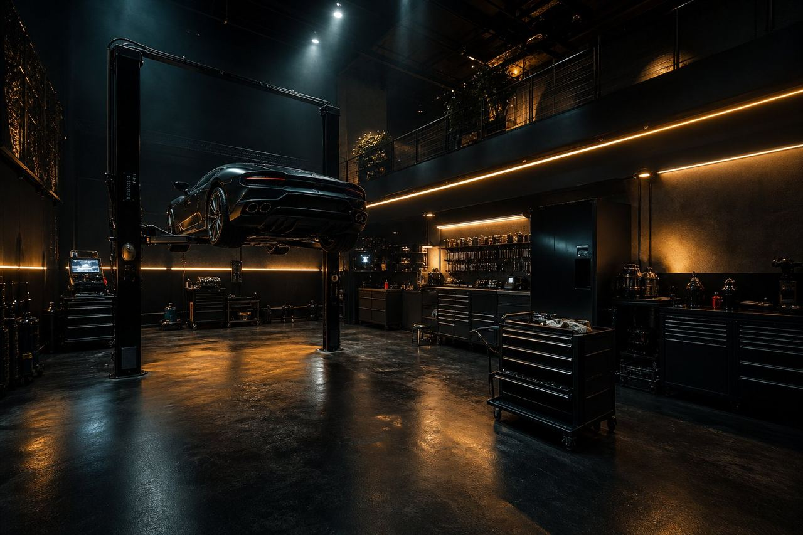
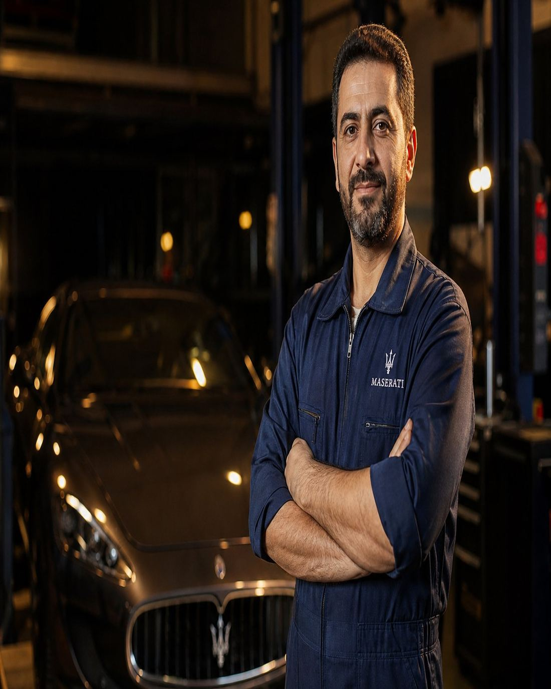
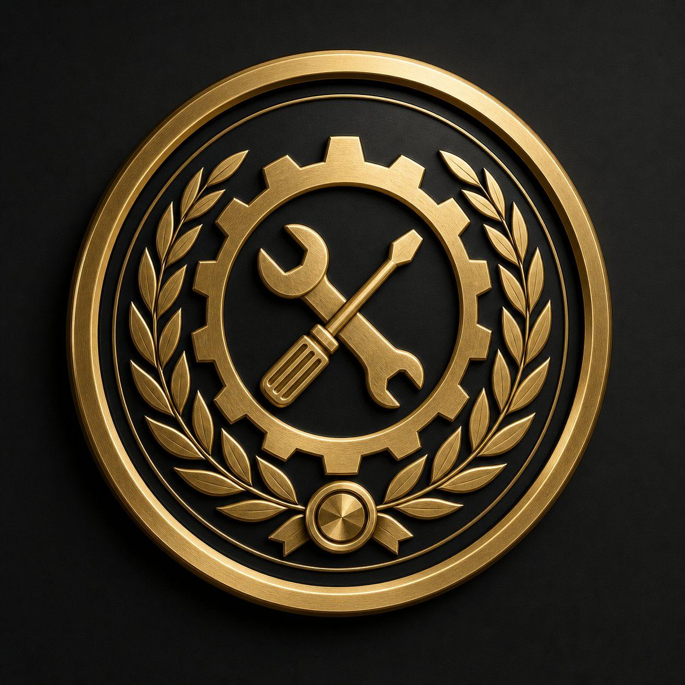
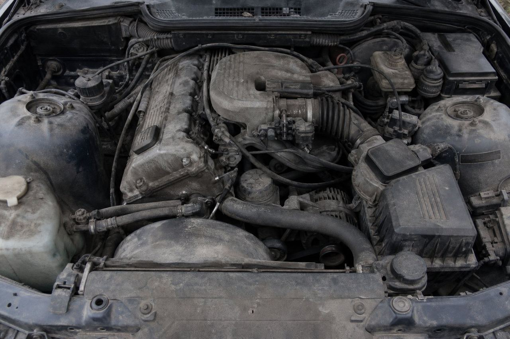
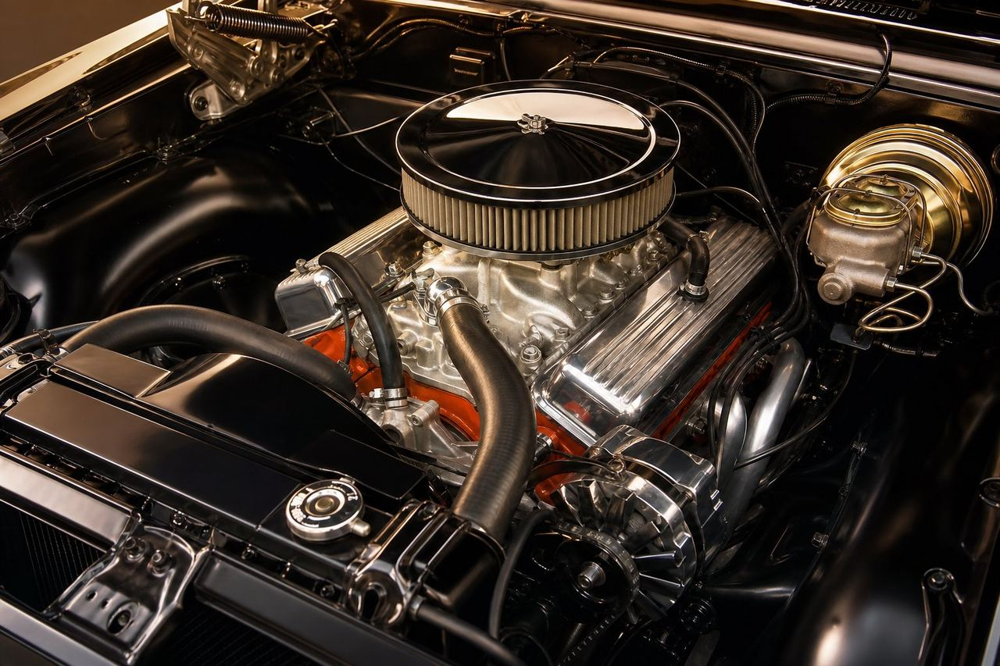
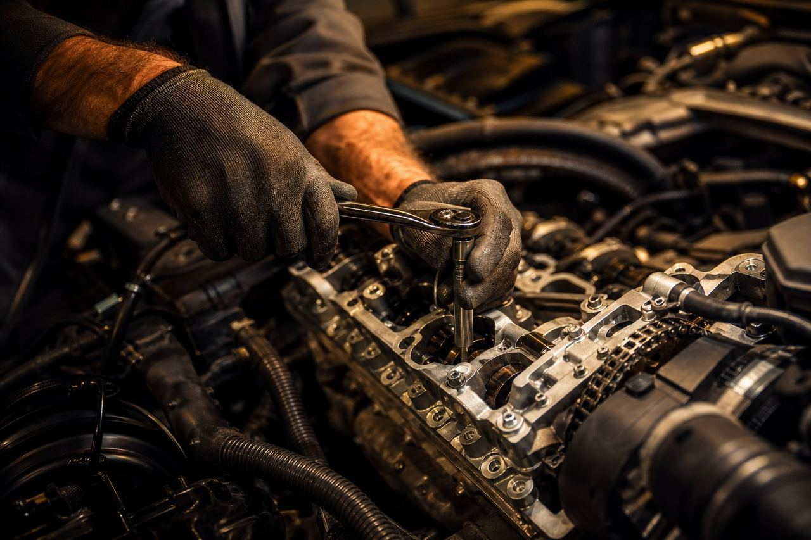
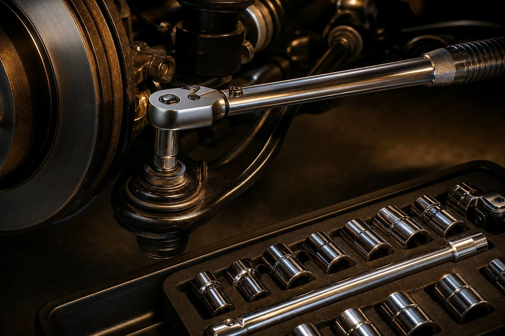
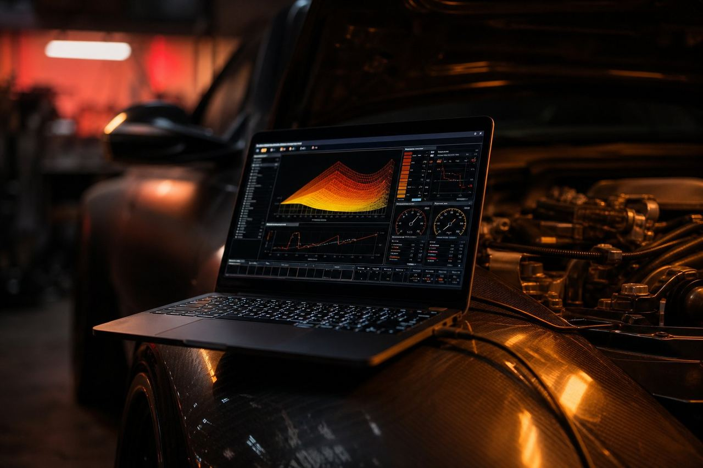
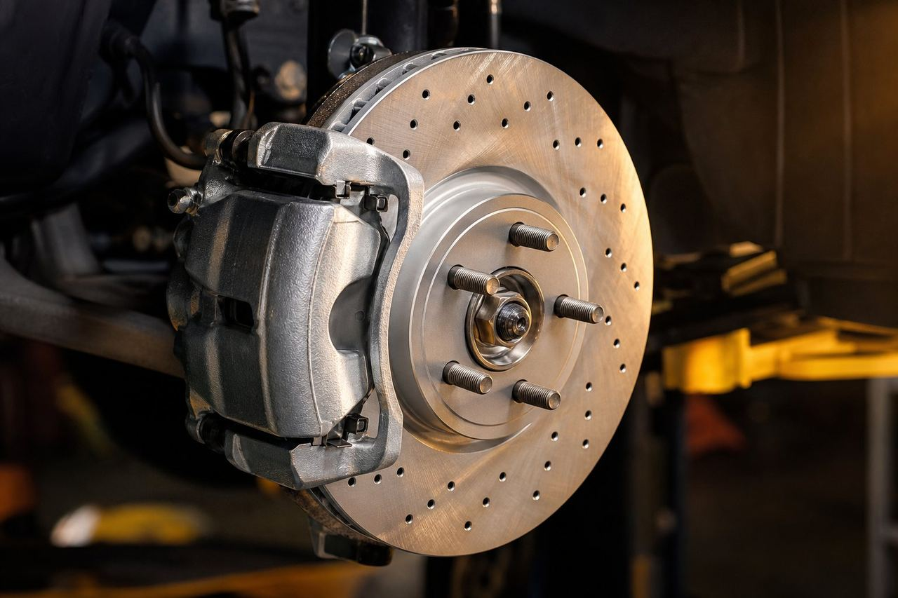

عیبیابی تخصصی و دیاگ
DIAGNOSIS · 45 MINخوانش خطاها، لاگ زنده سنسورها و تست عملی برای رسیدن به علت ریشهای — نه حدس و آزمونوخطا.
- گزارش کتبی + نمودار سنسورها
- تست کمپرس و نشتییابی دود
- هزینه در صورت تعمیر، از فاکتور کسر میشود

رزومه کاری · نسخه ۱۴۰۵
۱۷ سال است که صدای موتور را قبل از دستگاه میشنوم و خطای ECU را قبل از مشتری پیدا میکنم. متخصص عیبیابی الکترونیک، گیربکس اتوماتیک و تیونینگ روی دینو — با گزارش مکتوب، قطعه اصلی و ضمانت کتبی.
درباره من


کارم را در ۱۶ سالگی در لکهگیری و تعویض روغن یک تعمیرگاه در خیابان کارگر شروع کردم؛ امروز همان دستها ۴۲۰۰ پرونده تعمیر را پشت سر گذاشتهاند و همان کنجکاوی، زیر هر کاپوت دنبال دلیل میگردد، نه فقط تعویض قطعه.
باور من ساده است: عیبیابی قبل از تعمیر. هیچ پیچی را باز نمیکنم تا وقتی دادههای سنسورها، تاریخچه خطا و تست کمپرس روی میز نباشد. همین باعث میشود هزینه مشتری کمتر و زمان تعمیر کوتاهتر شود — و کاری که تحویل میدهم، برگردد.
در کنار کار فنی، مربی دوره «عیبیابی سامانه سوخترسانی انژکتوری» در سازمان فنیوحرفهای هستم و برای سه تعمیرگاه استانداردسازی فرآیند پذیرش و چکلیست ۴۰ قلمی سرویس پیادهسازی کردهام.
مهارتهای تخصصی
درصدها بر پایه ارزیابی عملکرد ۲۴ ماه اخیر، آزمونهای داخلی کارگاه و گواهینامههای OEM محاسبه شدهاند.
خدمات
هر خدمت با چکلیست، عکس قبل/بعد و گزارش فنی برای مالک تمام میشود.
خوانش خطاها، لاگ زنده سنسورها و تست عملی برای رسیدن به علت ریشهای — نه حدس و آزمونوخطا.
اورهال کامل، تنظیم تایمینگ، تعویض یاتاقان و رینگ، بازسازی سرسیلندر با تست فشار و نشتی.
تعمیر شیرینگرو، تعویض دیسکپلیت، سرویس روغن و فیلتر، ریست ادپتیشن و تست جادهای.
افزایش قدرت و گشتاور در محدوده ایمن قطعات، همراه دیتاشیت دینو قبل و بعد از کار.
عیبیابی اتصالی، نقشهخوانی، کدنویسی یونیتها، کدنویسی کلید و فعالسازی آپشنها.
تعویض لنت و دیسک، بالانس، بادانسی سهبعدی، رفع صدای جلوبندی و تنظیم هندسه چرخ.
شارژ گاز R134a/R1234yf، نشتییابی با UV، تعویض کمپرسور و شستوشوی کانالها.
چکلیست ۴۰ قلمی، روغن و فیلتر اصلی، بررسی تسمهها، شلنگها، فنر و سطح مایعات.
بررسی بدنه، شاسی، موتور، گیربکس و تاریخچه سرویس — همراه گزارش خرید یا انصراف.
سوابق شغلی
راهاندازی واحد دیاگ و دینو، مدیریت تیم ۶ نفره، تدوین استاندارد «عیبیابی قبل از تعمیر» و کاهش ۳۸٪ زمان تحویل. مسئول پروندههای بنز، بیامو، ولوو و خودروهای هیبریدی.
بیش از ۱۴۰۰ تعمیر موتور و ۳۲۰ تعمیر گیربکس اتوماتیک؛ مسئول بازسازی گیربکس ۶ سرعته اتوماتیک و سامانه دیزل توربو.
خدمات سیار و امداد جادهای، عیبیابی شبکه CAN، تعمیرات اورژانسی موتور و رفع خطاهای کیسههوا، ABS و یونیت بدنه.
سرویس دورهای، تنظیم موتور، تعلیق و ترمز خودروهای ایرانی؛ شروع بازسازی گیربکسهای دستی و آموزش سه نیروی فنی.
مؤسسه FAAAM · ایمنی سامانه فشارقوی
سازمان فنی و حرفهای · رشته تعمیر موتور
دوره تخصصی ۱۲۰ ساعته
کارگاه تخصصی گیربکس · سطح پیشرفته
سازمان فنی و حرفهای
HSE صنعتی · تجدید هر ۳ سال
نمونهکارها



موتور EF7
گیربکس
ریمپ
ترمز و تعلیقصدای مشتری
سه ماه بود با یک صدای لرزش در دور آرام دستبهدست میشدم. امیر با دودبلاور و لاگ سنسورها گفت مشکل از واشر مبدل کاتالیز نیست، سنسور دور موتور است — یک روز تمام شد و صدا مرد.
گیربکس ال۹۰ را دو جا گفتم باید کامل باز شود؛ اینجا با تعویض شیرینگرو و سرویس روغن درست شد و حدود ۲۲ میلیون درآمدم. بعدش هم یک فایل اکسل از همه قطعات تعویضی داد.
برای ریمپ EF7 انتظار عدد قهرمانانه نداشتم، ولی دیتاشیت دینو قبل و بعد و توضیح ریسکها واقعاً حرفهای بود. ماشین نرمتر شد و مصرف هم یکی دو دهم کم کرد.
قبل از خرید یک بیامو دستدوم، گزارش ۱۱ صفحهای با عکس و تست رنگ گرفتم؛ همان گزارش باعث شد از خرید یک ماشین تصادفی منصرف شوم. پولم را نجات داد.
برای ناوگان ۱۲ خودروی شرکت، برنامه سرویس پیشگیرانه چید. یک سال است هیچ خودرویی وسط کار در جاده نمانده و هزینه تعمیرات ناوگان ۳۱٪ کم شده.
تعرفهها
تعرفههای ۱۴۰۵ — قطعات جدا محاسبه میشود و همیشه قبل از خرید، فاکتور پیشبینی به مالک داده میشود.
حدود ۴۵ دقیقه · گزارش کتبی
نیم روز · چکلیست ۴۰ قلمی
قیمت نهایی بعد از بررسی فنی
سؤالات متداول
بله — برای تهران و کرج، سرویس دورهای، عیبیابی اولیه و کارشناسی خرید در محل شما انجام میشود. کارهای سنگین مثل اورهال و گیربکس در کارگاه انجام میشود، چون به بالابر، دینو و ابزار ثابت نیاز دارد.
هر تعمیر فنی ۳ ماه یا ۵۰۰۰ کیلومتر (هر کدام زودتر برسد) ضمانت کتبی دارد. قطعات، گارانتی شرکتی خودِ قطعه را دارند و فاکتورشان به پرونده خودرو اضافه میشود.
هزینه عیبیابی پایه ۸۹۰٬۰۰۰ تومان است و اگر تعمیر را همینجا انجام بدهی، این مبلغ از فاکتور نهایی کسر میشود. گزارش فنی هم همیشه مال خودت است.
ریمپ در محدودهای نوشته میشود که فشار روی پیستون، دمای اگزوز و محدودیت گیربکس رعایت شود؛ قبل از کار سلامت موتور باید در تست کمپرس و لاگ تأیید شده باشد. دیتاشیت دینو و فایل اصلی خودرو هم بکاپ میشود تا هر وقت خواستی برگردانی.
روی هیبرید (تویوتا، هیوندای و چری) با گواهینامه ایمنی فشارقوی کار میکنم: سرویس اینورتر، تعویض ماژول باتری و عیبیابی سامانه ترمز احساخی. برای خودروهای تمامبرقی فقط سطح ۱ (شارژ، ترمز، تعلیق، نرمافزار).
عیبیابی همان روز، سرویس کامل نیم روز و تعمیر اساسی بین ۲ تا ۵ روز کاری. وضعیت کار را هر شب در قالب یک گزارش کوتاه پیامکی دریافت میکنی.
تماس و رزرو
اطلاعات این صفحه نمونه (فیک) و برای تست سایت است.